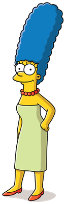

Bart Simpson

Bartholomew JoJo Simpson is a fictional character in the American animated television series The Simpsons and part of the Simpson family. He is voiced by Nancy Cartwright and first appeared on television in The Tracey Ullman Show short "Good Night" on April 19, 1987. Cartoonist Matt Groening created and designed Bart while waiting in the lobby of James L. Brooks' office. Groening had been called to pitch a series of shorts based on his comic strip, Life in Hell, but instead decided to create a new set of characters. While the rest of the characters were named after Groening's family members, Bart's name is an anagram of the word brat. After appearing on The Tracey Ullman Show for two years, the Simpson family received its own series on Fox, which debuted December 17, 1989. Bart has appeared in every Simpsons episode except "Four Great Women and a Manicure".
Homer Simpson

Homer Jay Simpson is one of the main characters of the American animated sitcom The Simpsons. He is voiced by Dan Castellaneta and first appeared, along with the rest of his family, in The Tracey Ullman Show short "Good Night" on April 19, 1987. Homer was created and designed by cartoonist Matt Groening while he was waiting in the lobby of producer James L. Brooks' office. Groening had been called to pitch a series of shorts based on his comic strip Life in Hell but instead decided to create a new set of characters. He named the character after his father, Homer Groening. After appearing for three seasons on The Tracey Ullman Show, the Simpson family got their own series on Fox, which debuted December 17, 1989. The show was later acquired by Disney in 2019.
Marge Simpson
Marjorie Jacqueline "Marge" Simpson[1] (née Bouvier) is a fictional character in the American animated sitcom The Simpsons and part of the eponymous family. Voiced by Julie Kavner, she first appeared on television in The Tracey Ullman Show short "Good Night" on April 19, 1987. Marge was created and designed by cartoonist Matt Groening while he was waiting in the lobby of James L. Brooks' office. Groening had been called to pitch a series of shorts based on Life in Hell but instead decided to create a new set of characters. He named the character after his mother Margaret Groening. After appearing on The Tracey Ullman Show for three seasons, the Simpson family received their own series on Fox, which debuted December 17, 1989.
Lisa Simpson

Lisa Marie Simpson[1] is a fictional character in the animated television series The Simpsons. She is the middle child and most accomplished of the Simpson family. Voiced by Yeardley Smith, Lisa was born as a character in The Tracey Ullman Show short "Good Night" on April 19, 1987. Cartoonist Matt Groening created and designed her while waiting to meet James L. Brooks. Groening had been invited to pitch a series of shorts based on his comic Life in Hell, but instead decided to create a new set of characters. He named the elder Simpson daughter after his younger sister Lisa Groening Bartlett. After appearing on The Tracey Ullman Show for three years, the Simpson family were moved to their own series on Fox, which debuted on December 17, 1989.
Maggie Simpson

Margaret Evelyn Lenny "Maggie" Simpson[1][2] is a fictional character in the animated television series The Simpsons and a part of the Simpson family, notably the youngest member. She first appeared on television in the Tracey Ullman Show short "Good Night" on April 19, 1987. Maggie was created and designed by cartoonist Matt Groening while he was waiting in the lobby of James L. Brooks' office. She received her first name from Groening's youngest sister. After appearing on The Tracey Ullman Show for three years, the Simpson family was given their own series on the Fox Broadcasting Company which debuted December 17, 1989.